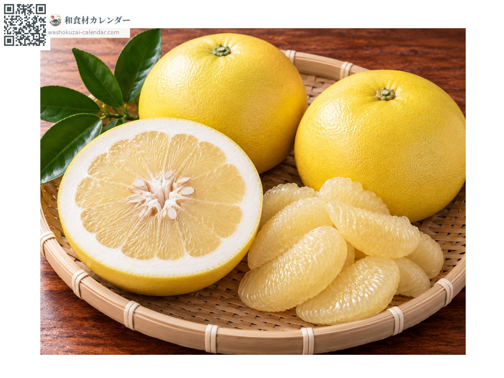
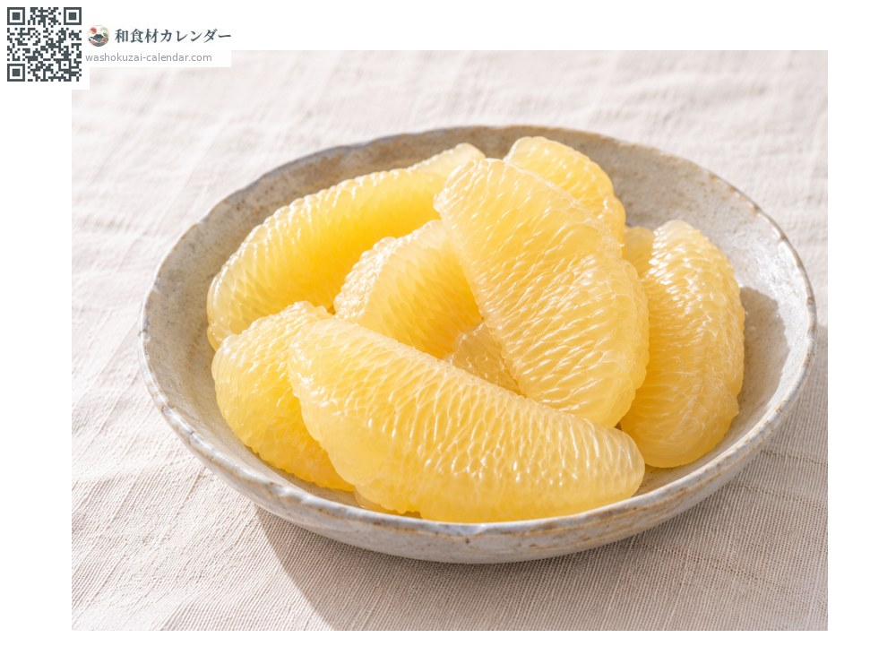
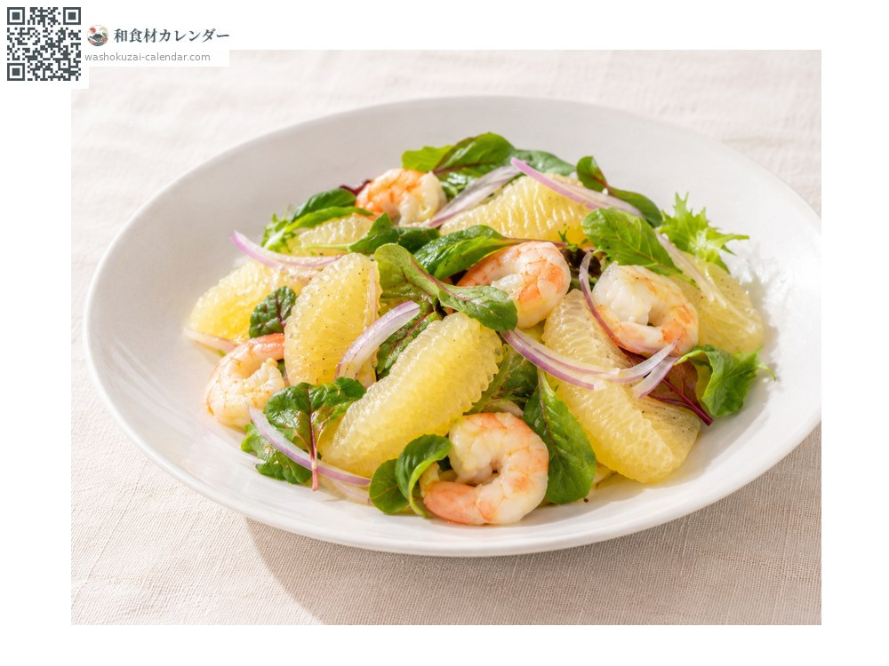
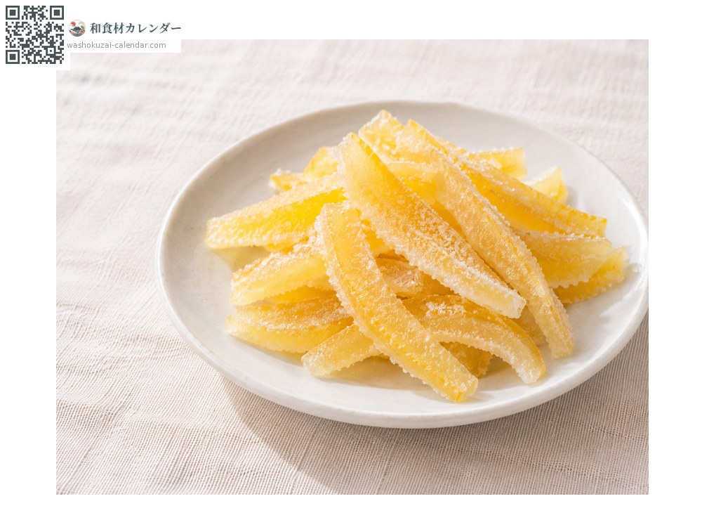
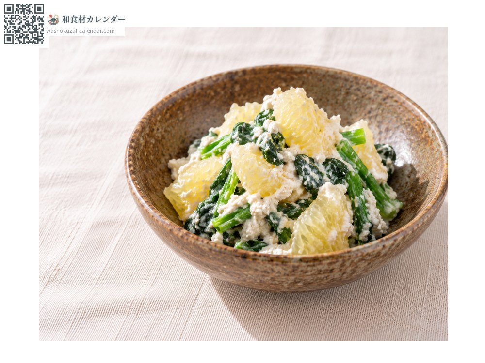

水果
文旦柚
文旦 ぶんたん buntan
別名buntan、bontan、zabon
當令時期為2月、3月、4月

當令時期
1月
2月
3月
4月
5月
6月
7月
8月
9月
10月
11月
12月
當令有供應
料理方式

直接生食
剝去厚皮與薄膜只吃果肉，果粒在口中迸開。

沙拉
果肉剝散後與生菜、蝦拌在一起。

糖漬果皮
厚皮汆燙去澀後，用糖熬煮。

白和
果肉與青菜用豆腐泥拌勻。
挑選方式
果皮緊實有光澤，拿起來沉甸甸的，蒂頭周圍不乾癟。
保存方式
放在陰涼通風處，常溫可保存1〜2週。剝好的果肉冷藏並盡早食用。
主要產地
小知識
日本的文旦幾乎都產自高知縣。冬季採收後先貯藏一段時間，讓酸味降低、甜味與香氣提升後才出貨。相傳名稱源自江戶時代漂流到鹿兒島的中國船船長之名。秋季也有溫室栽培的上市。